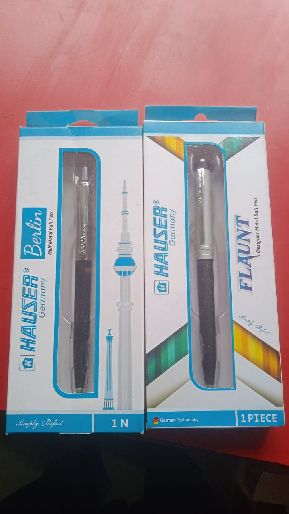

এ তো ছবি নয়
কবি : অধীর মন্ডল (+91 79809 33948)

🎵 অডিও পাঠ
এ তো ছবি নয়, পৃথিবীর ক্যানভাসে ছোট এক গ্রাম। টিনের ছাউনি, কাঠের তৈরী, বাড়ি, কী যেন গ্রামের নাম! সবুজ তৃণভূমি, তাল, সুপারি নারকেল, বৃক্ষ রকমারী। পাখিরা নিরিবিলি, স্বাধীন ওরা, কত রঙ বেরঙের বাহারি। ভোরের আলো ফোটার আগেই, পাখিরা ওঠে জেগে। কিচিমিচি কত সুর তার, কী ভালোই লাগে। নীল আকাশে,নীল সাগরে পেঁজা তুলোর ভেলা। দিকে দিকে কাশ ফুল, আর শিউলি ফুলের মেলা। ছোটো গ্রামে ছড়িয়ে ছিটিয়ে, চল্লিশ পঞ্চাশ ঘর। সবুজ ঘোমটায় আড়ালে, অপরাজিতা নীল নীলাম্বর। রবির কিরণ ছড়িয়ে পড়ে, শিশির ঢাকা ভোরে। ঘাসের ডগায় মনি মুক্তো, ঝরে মাটির পরে। বৃক্ষ শাখে কচি পাতা, শরৎ হাওয়ায় দোলে। শীতের আঁচড়,ভোরের ছোঁয়া, শীত এলো চলে। ভোরের আলো ফোটার আগেই, পাখিরা ওঠে জেগে। কিচিমিচি কত সুর তার, কী ভালোই লাগে। নীল আকাশে,নীল সাগরে পেঁজা তুলোর ভেলা। দিকে দিকে কাশ ফুল, আর শিউলি ফুলের মেলা। ছোটো গ্রামে ছড়িয়ে ছিটিয়ে, চল্লিশ পঞ্চাশ ঘর। সবুজ ঘোমটায় আড়ালে, অপরাজিতা নীল নীলাম্বর। রবির কিরণ ছড়িয়ে পড়ে, শিশির ঢাকা ভোরে। ঘাসের ডগায় মনি মুক্তো, ঝরে মাটির পরে। বৃক্ষ শাখে কচি পাতা, শরৎ হাওয়ায় দোলে। শীতের আঁচড় ভোরের ছোঁয়া, শীত এলো চলে।
বাইশে শ্রাবণ , তোমার স্মরণে
কবি : রবীন্দ্রনাথ ঠাকুর
🖼️ ছবি
এমনি দিনে তুমি চলে গেলে, দিয়ে গেলে অমূল্য রতন। রেখেছি সাজায়ে মনের গভীরে, দিবা নিশি করিয়া যতন। সাহিত্য ভান্ডারে তব, মনি মানিক্য রত্ন ভান্ডার। যার তুলনা তুমি নিজে কবি, গান, গল্প, উপন্যাস বিবিধ বাহার। সকল ঋতুতে প্রকৃতির সাথে, সুখে, দুঃখে ও প্রেমে। কলম তোমার অবিচল জাদুকর, বাইশে শ্রাবণে গেছে থেমে। তোমার মহিমা দিকে দিকে দেশ হতে দেশান্তরে। স্রষ্টা তুমি,সৃষ্টি নিয়ে, বেঁচে আছ চিরকাল ধরে। প্রণাম শত কোটি ,আমি ক্ষুদ্র অতি, যেন তোমার পরশ টুকু পাই। মহামানব, তুমি সাগর সলিল, তুমি, তোমার গভীরতাই।
দুটি পাখি ফেরেনি নীড়ে
কবি : অধীর মন্ডল
🎥 ভিডিও ক্লিপ
আজ দুটি পাখি ফেরেনি নীড়ে। সন্ধ্যা নামে, মন চায় নি, এখনো গাছের ডালে। পূর্ণিমা চাঁদ গাছের ফাঁকে, ওরা দুটিতে পাশাপাশি বসে, যেতে কী পারে এমন চাঁদকে ফেলে। আজ দুটিতে মন কষাকষি, নিভৃতে সন্ধ্যায় বসে। প্রেম বিরহ আসে আর যায়, দুটি মন এক হতে এই তো সময়। ছিলো দুটি, দু ডালে,এল পাশাপাশি প্রেম একে বলে। মিটি মিটি তারা, হাসে মিটিমিটি, চাঁদ বিস্ময়ে!ওরা কত অভিমানী। জোছনা ভাসিয়ে রাতের আকাশ, ওদের দুজনের কানাকানি। প্রেম ভালোবাসা কতই নেশা, বিরহে পাগল প্রায়। জীবনটা হতাশা,আশা পরিপূর্ন ভালোবাসা, ওরা ফেরে নিজের বাসায়। অভিমানে নিবিড় প্রেম, চাঁদিনী রাত, জীবনে বিরহ, প্রেম, হতাশা ও ভালোবাসা, সবই বিস্ময়।
মেঘ ভাঙা বৃষ্টি
কবি : অধীর মন্ডল (+91 79809 33948)
দুপুরে হুড়মুড়িয়ে বৃষ্টি এলো, আকাশ জুড়ে মেঘ। মেঘ ভাঙা সে প্রলয় বৃষ্টি, কী করে করি উল্লেখ! ঘন ঘন বাজ পড়ছে, কেঁপে উঠছে দিক । বিজলী চমক গগন ভেদি, চোখ ধাঁধিয়ে ধিক। আধঘন্টা অধিক জোরে, একটু থেমে আবার। চোখের সামনে মাঠ ছাপিয়ে, রাজপথে রাস্তার অধিকার। রাস্তা জুড়ে হাঁটু জল, কোথাও আরও অধিক। যান চলাচল বিপর্যস্থ, ভাসছে চারিদিক । ছুটির ঘন্টা বাজলো যখন, বৃষ্টি প্রবল বেগে। ছাত্র ছাত্রী বাড়ির পথে, পথ নেই আর জেগে। বৃষ্টি ভিজে কী আনন্দ আজ, সাইকেল কিংবা হেঁটে। অন্য গাড়ি দাঁড়িয়ে সবাই, বিশাল যানজটে। ছোট্ট শিশু মায়ের কাঁধে, চারি দিকেই হাঁটু জল। রেন কোর্ট পরে পুতুল পুতুল, মায়ের কী আদর বল! ভয় পায় না কেউ তখন, বাড়ি ফেরার তাড়া। বৃষ্টি সাথে বিজলি ঝিলিক, শ্রাবণ -এ এমন ধারা। অটো, ট্যাক্সি এতো জলে, হয়ে গেলো স্টার্ট বন্ধ। জলের তলায় রাজপথ তো, গর্ত, খানা খন্দ। ঘন্টা তিনেক তুমুল বৃষ্টি, রাজপথ ডোবা,পুকুর। জল পথ বন্ধ সবই, মেঘ ভাঙা এই দুপুর।
দেশ এগিয়ে
কবি : অধীর মন্ডল (+91 79809 33948)
দেশ এগিয়ে, মানুষ এগিয়ে, শিক্ষিতের হার বেশি। খাতায় কলমে, মিডিয়া প্রচারে, দেশের নেতারা বেশ খুশি। কৃষি কমেছে, শিল্প কমেছে, আরও উন্নতিতে কাট মানি। কয়লা চুরি, বালিচুরি,গরু চুরি, রেশন চুরি, চাকুরী চুরি, এটাই শিল্প জানি। উলঙ্গ রাজার উলঙ্গ পারিষদ, কী উল্লাস, কী আস্ফালন! জনগন জেনেও ভয়ে বলছে, পরনে ওদের অদৃশ্য আচ্ছাদন। শাসন শোষণ নব কৌশল, উন্নতি উন্নতি কত স্লোগান। ভেদা ভেদে কোমর বেঁধে,প্রচারে যীশু, আল্লাহ, ভগবান। শিক্ষা, স্বাস্থ্য সব বড় মানুষের, আমরা শুধু হাত তোলা জনগন। রাজ্য ছেড়ে ভিন রাজ্যে,বাঁচতে এটাই তো মানুষের উন্নয়ন। রাজপথ শুধু নালা নদী খানা, খন্দ, রাস্তা খুঁড়ে শুধু টালবাহানা। সময় মতো হয় না কাজ, বাঁ হাতের শুধুই আনাগোনা। বর্ষা এলেই নদী বাঁধ, কোদাল নিয়ে তখন ছুটোছুটি। বরাদ্দ কোটি কোটি টাকা, সেখানেও অনেক কলকাটি। ভিন্ন প্রকল্পে ভিন্ন টাকা, অদৃশ্য অনেক হাত। দেশ চলছে শুধুই প্রচারে, কী জানি অমাবস্যা না পূর্ণিমা রাত!